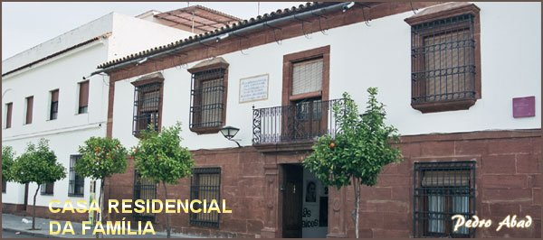
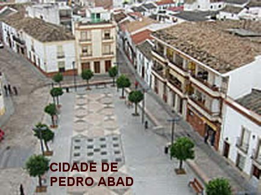
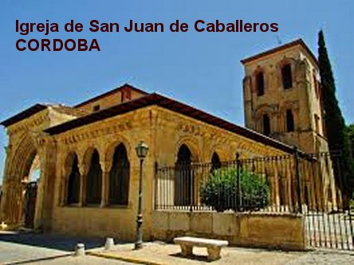
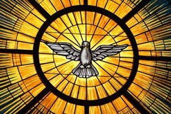
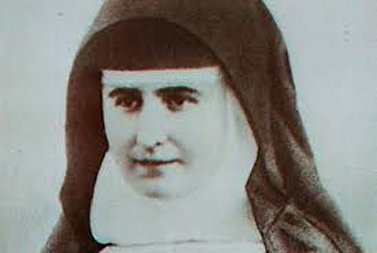

LAR UNIDO E AMOROSO
NASCIMENTO E EDUCAÇÃO
Rafaela Maria del Rosário Porras
y Ayllón, nasceu em Pedro Abad, no dia 1º de Março de 1850, sendo Batizada no
dia seguinte, 2 de Março. A pequena cidade em 
Dos 10 filhos que viveram duas eram as meninas Rafaela e Dolores, e 8 meninos, sendo todos criados no mesmo regime cristão, com obediência e respeito às leis humanas e a DEUS, sedimentando no coração de cada um deles uma apurada educação, eficaz e fraterna, fundamentada no próprio exemplo dos pais.<
Entretanto, as duas meninas, dentro do próprio ambiente familiar, receberam maior atenção, considerando que os homens sempre tiveram maior liberdade de ação. A cidade de Pedro Abad sendo um lugar pequeno como tantos outros, tinha as suas festas, com danças e muita alegria, mas onde primordialmente o sorriso convivia com a integridade, com a retidão, com a serenidade e a dor, assim como, existia uma fraterna aceitação das situações difíceis; ali o trabalho, o esforço pessoal e a exigência de praticar o melhor, se entrelaçavam com o descanso, a tranquilidade e a ternura.
Em particular, Ildefonso e sua esposa Rafaela Maria, se empenharam na educação das duas únicas mulheres da família, Rafaela e sua irmã Dolores 4 anos mais velha, não só pela grandeza do amor familiar, mas, sobretudo, pelo carinho do Amor Divino sempre presente nas suas vidas.
A CÓLERA CHEGOU MATANDO

O pai além de muito atencioso e fiel, também era o Presidente da Câmara de Pedro Abad. Sendo um homem bem relacionado e responsável, diariamente se agitava muito, preocupado com a segurança dos residentes e também com o desconforto causado em consequência das obras na localidade, objetivando sempre proporcionar o melhor bem estar a todos.
Entretanto, em 1854 espalhou naquela região uma terrível epidemia de cólera. Os serviços de saúde eram precários, e então as autoridades tinham que se movimentar para combater o mal. Muitos fugiram como puderam com suas famílias. Ildefonso possuidor de um fraterno espírito cristão, assumiu as responsabilidades e logo reuniu um pequeno grupo de pessoas para atender os doentes e necessitados de auxílio, e corajosamente, mesmo não estando devidamente preparado contra o abominável mal, não se preocupando com sua própria defesa, caminhou enfrentando a terrível epidemia. A luta foi árdua e longa, como se pode imaginar, mas ele foi atingido pela cólera. Sua saúde não resistiu e ele morreu.
BENÉFICOS ENSINAMENTOS
Diante deste terrível acontecimento, a esposa Rafaela Maria corajosamente, com muita confiança em DEUS, passou a dirigir a sua imensa família com 10 filhos. Nesta época, a filha Rafaela tinha apenas 4 anos de idade.
O esforço da mãe foi recompensado. Ela infundiu principalmente nas duas filhas, uma carinhosa mistura de ternura e suave exigência, tudo bem dosado com muito amor, que fez amadurecer o espírito de Rafaela erguendo do seu interior, os melhores sentimentos e disposições da filha. Avançando em idade para a adolescência, era uma jovem responsável que deixava refletir nos seus atos, perfeita segurança, revelando-se de modo tenaz e suave em cada tempo da sua vida; estava compenetrada dos deveres e do seu direito, contudo, com um coração cheio de bondade, sempre disposto a se revelar fraternalmente, ela até cedia nos seus gostos e desejos, diante da vontade manifestada pelos outros.
Tanto Rafaela como Dolores foram tão bem educadas, que as amigas da mãe chegavam a dizer: que elas poderiam se quisesse, até frequentar as melhores sociedades na Espanha.
DECIDIDA CONSAGRAÇÃO

Entretanto Rafaela foi mais além, em 1865 com 15 anos de idade foi à cidade de Córdoba, e diante do Altar da Igreja de São João dos Cavaleiros, de joelhos e com perfeita consciência, se consagrou a NOSSO SENHOR com Voto de Castidade Perpétua. Isto aconteceu no dia 25 de Março, festa da ANUNCIAÇÃO DO SENHOR, quando a SANTÍSSIMA VIRGEM MARIA disse ao Arcanjo Gabriel:“Eu sou a Serva do SENHOR, faça-se em Mim segundo a TUA palavra!” (Lc 1, 38)
Por um ato da Providência Divina, aquela Igreja anos mais tarde, foi entregue aos cuidados das “SERVAS DO SAGRADO CORAÇÃO DE JESUS”, obra que Rafaela Maria, com o auxilio da sua irmã Dolores, corajosamente fundaram.
E agora, com a idade de 15 anos, Rafaela se dedicou com mais fervor a oração e a cuidar dos enfermos e pessoas necessitadas, isto apesar da oposição dos seus irmãos homens. Mas com paciência, humildade e conversação inteligente, pode se dedicar a esta obra assistencial, que era um precioso auxílio benéfico e misericordioso, aos pobres da sua cidade, que sempre necessitavam de orientação e apoio.
FALECIMENTO DA MÃE
Em Fevereiro de 1869, a família sofreu outro terrível golpe, com uma grande e inestimável perda, o falecimento da mãe; a senhora Rafaela Maria de los Dolores, já esgotada pela cansativa labuta cotidiana no lar, partiu para a eternidade. Foi uma triste perda que abalou a família. Assim, após a morte dos seus pais e os casamentos dos seus irmãos que se sucederam com vários membros da aristocracia, Rafaela e Dolores passaram a administrar a propriedade da família. As orações no lar estavam sempre presentes, e era o recurso sagrado que lhes traziam a necessária inspiração e coragem, para enfrentar as próprias dificuldades e tranquilamente raciocinar para a elaboração dos seus projetos de vida.
O ESPÍRITO SANTO ILUMINA OS CAMINHOS

INSTITUTO DAS ADORADORAS DO SANTÍSSIMO SACRAMENTO E DAS FILHAS DE MARIA IMACULADA
Em 1876 a Organização Religiosa Francesa mudou-se para Sevilha, mas as duas irmãs decidiram permanecer em Córdoba, com as outras Noviças espanholas, amparadas pelo Arcebispo Ceferino González. O senhor Arcebispo as estimulou a dar andamento ao projeto do Instituto que elas haviam fundado. Elas, tanto se entusiasmaram que no mês de Dezembro do mesmo ano de 1876, colocaram em atividade o Instituto que sonhavam em realizar: “INSTITUTO DAS ADORADORAS DO SANTÍSSIMO SACRAMENTO E DAS FILHAS DE MARIA IMACULADA”. As duas irmãs assim como as jovens espanholas que as acompanhavam ficaram muito felizes. Mas, depois, cheia de modéstia Rafaela disse: “Mas, eu não quero ser Fundadora”. Agora era impossível alterar a realidade histórica, e ela inclusive, foi eleita Diretora da Comunidade Religiosa, apoiada por todas as moças Postulantes presentes.
Este era o nome inicial da Ordem Religiosa fundada por Rafaela e Dolores em 1874. O Arcebispo Ceferino indicou para Dolores, o cargo de Auxiliar Chefe da Comunidade. Todas as Irmãs unanimente concordaram e com alegria comemoraram o acontecimento.
VIDA RELIGIOSA

Rafaela e sua irmã Dolores, assim como as suas companheiras, estavam perfeitamente conscientes do que desejavam; estavam sim, imbuídas de um profundo sentimento cristão. Também, sabiam da dureza e dificuldades do caminho que escolheram para a santificação de suas vidas. E por esse motivo, para ajudá-las na caminhada existencial, escolheram e usavam com predileção, serem orientadas baseando a vida religiosa na espiritualidade de Santo Inácio de Loyola. Assim elas escolheram a Regra de Santo Ignácio como a direção espiritual que mais lhes agradavam. Mas esse desejo não foi compartilhado pelo Arcebispo Ceferino que condicionou aceitá-la, desde que na Regra fossem introduzidas diversas modificações. As Postulantes souberam desta noticia antecipadamente por uma pessoa amiga e ficaram apavoradas. Reunidas com Rafaela e Dolores decidiram de comum acordo, abandonar Córdoba ao anoitecer, e se mudaram para a cidade de Andújar, situada a oitenta quilômetros de distância. Em Córdoba permaneceu apenas Dolores para conversar com o senhor Arcebispo Ceferino, e lhe apresentar todas as justificativas, assim como os agradecimentos da Comunidade Religiosa pela ajuda que ele havia proporcionado a mesma.
NOVA MUDANÇA
Em Andújar as dificuldades eram muito maiores, pois sendo uma cidade pequena, embora trabalhassem muito mais, elas não tinham condições de superar todos os problemas. Então decidiram levar a Comunidade Religiosa para Madrid. Todas elas, imbuídas do mesmo ideal seguiram dispostas a enfrentar todos os obstáculos, para a Comunidade se firmar definitivamente. Em Madrid, abriram uma Casa no Bairro Chambery e reiniciaram os seus trabalhos com toda alegria. Tiveram notícias da morte do Padre José Antonio Ortiz de Urruela que sempre lhes ajudavam. Em lugar dele veio o Padre Jesuíta P. Cotanilla e o Bispo Auxiliar de Madrid, Dom Sancha. Na capital espanhola as dificuldades apareciam sim, mas o campo era muito mais vasto, e aos poucos, com muitas orações e persistência, elas foram vencendo os obstáculos, e todas as dificuldades foram sendo solucionadas gradativamente. A Comunidade começou a crescer.